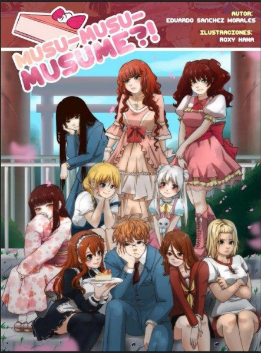
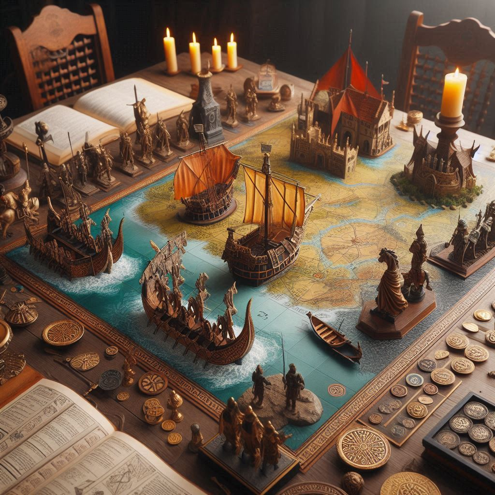

Juego de Rol o Rol de mesa se definiría como una aventura que tiene lugar en un mundo imaginario, en el cual se desarrolla dicha actividad o sucesos a través de la conversación entre los jugadores y DM (Dungeon Master).
Es decir, cada jugador o persona interpreta el papel de un personaje que participa en la historia, conducido por otra persona, que hace las veces de narrador o juez a lo que denominamos Dungeon Master.
En este tipo de juegos, la cooperación suele ser vital para llegar al desenlace de la historia,
pero se dan ocasiones donde el personaje que un jugador representa puede llegar a obstaculizar al resto de jugadores y, por tanto, al desarrollo de la partida.
El nacimiento de los juegos de rol se originó con Gary Gigax en 1973 y su suplemento para el juego de miniaturas Chainmail.
Por primera vez los personajes de wargames eran importantes a nivel individual.
Esa ambientación inicial era de fantasía, con claras influencias de las obras de J. R. R. Tolkien y Robert E. Howard.
Su primer objetivo era el modelado o diseño de personajes,es decir, se trataba de crear características, habilidades
y reglas que pudieran ser usadas para traer a personajes, poco después surgió la idea del desarrollo y progresión de los personajes.
El ejemplo más inmediato de esa idea fue el de Dungeons and Dragons, creado por Gary Gigax y Dave Arneson en 1974 donde en lugar de tener personajes estáticos, ofrecía a los jugadores formas de que sus
personajes evolucionaran y cambiaran.
El impacto de este fue tan fuerte con respecto al anterior que en muy poco tiempo se convirtió en norma.
Durante los siguientes años surgieron juegos como Traveller (1977) y La Llamada de Cthulhu (1981) que tuvieron una gran acogida y tenían propuestas diferentes a Dungeons and Dragons.
Alrededor de 1984 se concibió otra idea, los juegos de rol narrativos o storytelling role playing games, que en lugar
de centrarse en el desarrollo de los personajes se puso la atención en el desarrollo de la historia.
En cierto grado se intento por contar mejores historias no siendo solo una inversión en el poder de los personajes, como fueron
Paronia(1984), Pendragón (1985), Ars Magica(1987), Kult(1991) y Vampiro: La Mascarada(1991).
Por el año 2000 aparecio asentandose un nuevo movimiento en el mundo del rol llamado movimiento Indie con los foros The Forge y Story Games, y la teoría GNS el cual destaban en el control de los elementos del juego
por parte del autor y en hacer propuestas alejadas de lo mainstream. Este movimineto tuvi juegos de gran éxito como The Burning Wheel(2002) y Fat(2003) y por último más adelante Apocalypse World(2010) y su prole de juestos con un sistema Powered by the Apocalypse.
Otro movimento que surgió fue el movimento OSR que proponían una vuelta a los orígenes de los juegos de rol, teniendo como espejo principal a las primeras ediciones de Dungeons and Dragons.
En la época actual se han publicado numerosos y variado juegos, volviendo la historia cada vez más compleja.
A lo largo de esta breve pero intensa historia el enfoque ha ido evolucionando al diseñar el núcleo del juego, la resolución de acciones, el desarrollo de personajes y la estructura de las historias, entre otros.
Desarrollo de los juegos
Modelos tácticos, encuentros tácticos (1973)
En la década de 1960 los juegos de rol nacieron directamente de los juegos de miniaturas y wargames, por eso no debe sorprender que los primeros modelos tuvieran sistemas de combate muy rígidos conformas de combate con miniautras de varientes del juego Chainmail
Dicha tendencia permanecio en la actualidad en muchos títulos que a día de hoy cuesta encontrar algun juego que puntualice mucho en el aspecto táctico a parte del combate
Con el paso de los tiempos se unierón distintos modelos de diseño dentro del juego cuya relación pudiera permanecer arbitraria o inconsistente, pero conseguían un resultado funcional
Juegos como Dungeon and Dragonsy Advance Dungeon and Dragons tenían un modelo para características, otro modelo para clase de armadura, otra para habilidades de combate, otro para hechizso de clérigo, otro modelo para hechizos del mago yotro para habilidades del ladrón. De aquí también surgieron los modelos de diseño de personajes basados en clases con Dungeon and Dragons
En este modelo de clases los personajes tenian un nucleo de habilidades únicas y no había mucho espacio para personajes realmente propios, lo cual fue una experiencia progresiva ya que se basaba en una serie de objetivos separados pro grados (o niveles) la que permitían abrir nuevas categorías y formas de juego a los personajes conforme ganaban en veteranía. Otros títulos de la época que imitaron este modelo fueron juegos como Tunnel & Trolls la idea de crearse a personajes básandose en sus habilidades y no en su clase también surgió en esta época. Esta idea fue traída principalmente por Traveller en 1977, un año después el juego RuneQuest asentó esta idea cimentando la idea de experiencia constante, que implementaba la mejora de habilidades gradual ultilizando las habilidades mismas
Modelos basados en puntos, acciones complejas, desapego con los personejes, personalidades significativas (1980-1985)
El modelo basado en puntos se apoyaba en la idea de que, a pesar de que los rangos num&ericos para describir distintos subsistemas fueran diferentes, podían vincularse a partir de ciertos puntos estándar, este modelo sucedió aproximadamente a partir de Traveller, Book 5, High Guard donde se incluía puntos de construcción y medía el valor de las naves por tonelajes, el cual limitaba la cantida de módulos a construir por el peso de los componentes, aunque quien verdaderamente trajo esta idea a las masas fue Champions el cual utilizó un modelado de personajes con este tipo de puntos, tambien tomaron esta idea juegos de la talla La Llamada de Cthulhu y Stormbringer, con su sistema Chaosium Basic Roleplaying inspirado en las habilidades basicas percentiles del ladrón de Dungeon and Dragons con Rolemasterse popularizaron las acciones complejas, el cual permitían a los jugadores tenre grados de éxitos y fracaso a parte de simplemente acertar o fallar tiradas. Hasta esta época la muerte de los personajes era vista como derrota, pero juegos como Paranoia hizo de la muerte algo común y esperable, otros juegos como Pendragon también conocido por ser uno de los primeros en introducir matrices de personalidad significativos en los personajes, hizo énfasis en esta idea al utilizar campañas muy largas donde los primeros personajes envejecían y morían, y los jugadores tenían que crearse otros personajes para continuar la historia, esto tenía reprecusicones reales en los personajes, e incluso podía forzar acciones en casos extremos
Modelos universales, juego narrativo, control compartido(1986-1988)
En este periodo se asentaron los sistemas de juego implementables para una gran variedad de ambientaciones, aunque esta idea era tan ambigua como los propios juegos de rol, el primero en impelentarla de forma sobresaliente con el sistema de juego Chaosium Basic Roleplaying sistema que se utilizo en otros juegos de rol cuyas ambientaciones diferían enormemente entre sí. Pero el más prominente de los juegos que proclamó que su sistema de juego podía utilizarse de forma universalfue GURPS. Prestando mucha atención al detalle en sus reglas, permitiendo implementar ambianteciones desde la prehistoria hasta los futuros más lejanos. También en esta época surgió una idea más clara de las organizaciones secretas o con algún fin transcendente como Paranoia o Ars Magica. Pero hasta mas tarde que no sería con Vampiro: La Mascarada cuando la idea de las organizaciones secretas fuera conocida por gran parte de los jugadores. Ars Magica tambien propuso una idea generalmente desconocida para los jugadores de rol,el control compartido de personajes. Cada jugador podía jugar distintos personajes vuyo impacto en la historia era relavante, y luego había personajes que eran utilizados por todos los jugadores, de esta manera se conseguia una expereancia de progresion e interpretación mucho más varida y compleja, lo cual tambien se trasladaba al director de juego, que podía ir cambiando, también surgióla idea de premiar con puntos de experiencia a los jugadores que interpretaban bien a sus personajes y no solo por superar desafíos.
Modelos de estilo libre, creación independiente de personajes, sistemas de resolución controlados(1988-2000)
Ars Magica y sus sistema de magia que permitiía combinaciones infinitas de hechizos más allá de los escritos en el manual fue uno de los pioneros en este estilo libre, también se popularizó el uso de plantillas de personajes, los cuales sugerían habilidades y transfondos genéricos. Torg y Ars Magica fueron los primeros en utilizarlos de forma sistemáticas.
Los modelos consistentes comenzaron a intentar vincular todos los rangos numéricos de los personajes entre sí, el juego Vampiro: La Mascaradafue uno de los que intentaron lograr esta tarea uniendo la línea divisoria artificial entre atributos y habilidades de una manera más explítica, también utilizó el mismo sistema que Shadowrun pero con dados de diez caras, con bajas estadísticas y reflejadas con puntos en lugar de números.
Con él se pretendía formentar un estilo de juego narrativo, el cual fue ganando popularidad, lo que procuraba poner la ficción primero por encima de las mecánicas.
También fue el primer o uno de los primeros que compartia un mismo mundo con otros juegos, como por ejemplo, Hombre Lobo: El Apocalisis, Mago: La Ascensión entre otros, e incluso en su propio pasado histórico mediaval con Vampiro: Edad Oscura en esta época hubo estilos de creación de personaje libre como Over the Edge, el cual introducía un proceso de creación donde los jugadores describían sus personajes y solo entonces intentaban asignarles estadísticas, sin ninguna consideraciíon en el equilibrio del juego. También Deadlands ideóun estilo propio de creación de personajes que venían definido al extraer cartas de un baraja poker. Otros juegos de este estilo fueron Sketch!, donde los jugadores votaban las habilidades del personaje basándose en un dibujo; o Hero Wars el cual los jugadores tenían 100 palabras para describir a sus personajes, este último juego también popularizó el uso de regñas abstractas para todo tipo de desafíos además los jugadores podiían utilizar reglas idénticas o similares bien fuese para debatir, hacer carreras, lanzar jabalinas o pelear. También incluía sistemas diferentes, como las apuestas, donde los jugadores apostaban distintos "puntos de acción" para que pudieran controlar el grado de esfuerzo y riesgo de cada encuentro.
La historia reciente de los juegos de rol gana en comlejidad debido al crecimiento de las editoriales y autores independientes, aumentando el número de juegos por año hsata nuestros días. En el año 2000 se publicó la tercera edición de Dungeons and Dragons y se permitió publicar suplementos compatibles cono el sistema d20 a través de la Open Game License, este tipo de estrategias comerciales tuvieron un gran éxito.
Se vendían más manuales básicos debidos a la gran cantida de suplementos respaldados oficialmente. Dicha apertura de licencia fue origen de Pathfinder cuyo éxito fue tan elevado que superó por primera vez en ventas a Dungeon and Dragons, el cual habia sido el juego más vendido anño tras año desde 1974. Durante esta época surgieron juegos como Hack Master el cual introdujo un sistema de combate de conteo, donde los jugadores decidían las acciones "segundo a segundo", con apenas margen de tiempo entre acciones, lo que pretendía ser una sensación más realista y hóstil en los combates. En futuras ediciones se basóen puntos de hechizo en lugar de un número fijo de ellos, la consolidación de los juegos de rol indie dio lugar a juegos como The Burning Wheel el cual utilizada para su creación de personajes una monitorización desde el momento que nacían hasta el comienzo de la aventura, combinaba un transfondo detallado con motivaciones y creencias que conectaba a los personajes jugadores con la historia y con los otros personajes jugadores.
La historia pretendía desarrollarse orgánicamente sin ningún guión prefijado. Incluía una serie de mecánicas de juego explícitamente diseñadas para evitar el encarrilamiento y favorecer la confianza y cooperación entre jugadores. Uno de los aspectos singulares fue la labor del director de juego consistía principalmente en ofrecer desafíos que cuestionasen esas creencias y motivaciones, lo que llevo a que los jugadores tendían a cambiar sus objetivos y actitudes a lo largo de la historia Fate, basaron en el sistema genérico Fudge, irrumpió en escena y ganó notoriedad ya que su idea principal era diseñar un sistema que facilitase la miníma obstrucción hacia el aspecto narrativo del juego,concibió unsistema de aspectos, los cuales eran unos descriptores que podían invocarse los cuales estaban a libre interpretación y hablaban sobre algo destacable del personaje o la escena. La interacción de los jugadores con la narrativa a través de las mecánicas, asi como su capacidad para alterarla, lo convirtieron en un juego que ofrecía una experiencia no-convencional y alejada de lo mainstream.
Esta forma fue diseñada con el objetivo de acercarlo a las masas. Otros juegos como Savage World ganaron popularidad en ese periodo dado que enfatizaba en reducir la preparación y acelerar la velocidad del juego, dotandolo de espectacularidad en lugar de enfatizar en la preparación y el realismo. Durante este periodo surgieron nuevas propuestas de juego como HeroQuest donde se basaba en la improvisación creativa, la agudeza verbal y la familaridad con las técnicas y el esterotipod de género en cuestión. Otros utilizaron una forma de resolución de conflictos inspirada en el poker con pequeñas apuestas, al inicio el director de juego decidía que estaba en juego, determinaba cu&antos dados se podía tirar y se lanzaban, luego el personaje con iniciativa "subía la apuesta" y narraba una porción del conflicto que sería beneficiosa para él, su oponente debía entonces responder subiendo la apuesta con más dados o declararse perdedor del conflicto, otros aspectos impotantes de este juego fue un diseño innovador de creación de poblaciones, odne se incidía en los personajes, sus deseos y que cosas se habian hecho los unos a los otros lo que concedía al director la habilidad de implicar muchos a los jugadores en lugar de simplemente presentarles un desafío. Otros juegos como FIasco proponían un estilo de juego único sin director de juego que no requería de preparación y enfatizaba en las relaciones entre personajes, mientras que surgieron sistemas que intentaron tambien innovar algunos géneros como el de la investigación. El movimiento indi mantuvo su fuerza con Apocalypse World que dio a luz a varios juegos con su sistema y filosofía que era un estilo donde "la ficción va primero" y no se preparaba la trama sino que más bien se jugaba "para ver lo que sucede"
El movimiento OSR fue posible al liberarse la licencia Open Gaming License del sistema de Dungeons and Dragons en el año 2000, sin embargo proponía un énfasis menor en tramas lineales y grandes metatramas, y más en la agencia y libertad de los jugadores, la mayor parte de sus reglas eran variantes de la reglas originales del juego, Dungeon Crawl Classic también hizo una apuesta fuerte por el revival utilizando la Open Gaming License de la tercera versión intermedia de Dungeons and Dragons pero con un contenido y estilo inspirado en la primer edición de Advanced Dungeons and Dragons.
Más adelante surgió Lamentions of the Flame Princess, que recreaba las ediciones de Dungeons and Dragons de los 70 y 80, pero con un toque distintivo lleno de una imaginería oscura e inquietante, una propuesta de ambientación del siglo XVII en sus primeras campañas publicadas,en lugar de seguir el espírutu revival como tal, vimos como Pathfinder. Por este motivo Dungeons and Dragons trabajaría para publicar una quinta edición de su juego en 2014 que quitase las divisiones en la comunidad que produjo su cuarta edición, la cual fue ofuscada por Pathfinder.
Hubo un resurgimiento de ediciónes antiguas de juegos emblemáticos como GURPS con Transhuman Space, lugego con Pendragon lo que llevo a que debido a cierta insatisfacción con la nueva ambientación de Mundos de Tinieblas con Vampiro: El Réquiem surgieron nuevas reediciones de juegos muy queridos por la afición, este espiritú de reedición continua hasta día de hoy, otros juegos han apostado por ambientaciones densas y complejas, como puede ser Eclipse. En este periodo también ha habido un nacimiento sostenible de los juegos de rol para niños, como Hero Kids.
Otros juegos con un formato innovador como Fall of Magic, han sido probados con niños con gratas experiencias, utilizaban la narración compartida con un claro énfasis en contar historias de aventura. Su formato de presentación fue también único, mostando el mapa de jeugo en forma de pergamino y utlizando distintos elementos como monedas y cartas. En la actualidad juegos como Blades in the Dark, Starfinder, entre otros presentan un parorama heterogéneo, el número de juegos independies ha ido creciendo hasta nuestros días, ofreciéndonos experiencias de todo tipo brindandonos un futuro muy variados que pretende satisfacer los múltiples gustos de un público cada vez mas grande y dispar
El Caos Al Olvido
Temáticas del rol
Aunque muy a menudo se mete los juegos de rol en el género de la fantasía épico-mediaval con seres fantásticos muy estereotipados,(como elfos, magos y dragones), lo que problamente se deba a que el juego más famoso se basaba en las novelas de ese género. La ambientación del rol en realidad tiene una indinidad de temáticas, limitadas solo por la imaginación.
Entre las diferentes temáticas podemos distintir en:
Romance
Este género aunque esta mal explicado este su definicion dentro la de comunidad rolera, son los diferentes sucesos que ocurren dentro de una historia que conlleva a la unión amorosa o íntima de una pareja o grupo de personajes, este utiliza la descripción de emociones y sentimientos como base fundamental de la narración de la historia, después de todo, una historia amorosa suele ser contada mediante el uso de los sentimientos de los personajes pasando por obstáculos que tuvieron que superar para poder llegar a sentir dicho sentimiento de amor.
dentro de este género se pueden encontrar las partidas de rol tipo Musumusume que es son partidas donde el objetivo es conquitar a tu crush evitando caer en las garras de tu Arista el cual esta enamorado de ti desde mucho tiempo

Aventura
Este género describe o narra los viajes, problemas y reisgos que deben pasar los personajes en el argumento de la historia, suele ser uno de los géneros más recurridos dentro de la comunidad, siendo acompañado por los de fantasía.
Utiliza recurso de la descripción de paisaje, nuevos lugares y nuevos personajes, también como de problemas y situaciones los cuales los personajes deben superar para continuar con la historia.Suele desarrolarse la trama en vez del aspecto psicológico de los personajes.
Dentro de este género se pueden encontrar las partidas de rol tipo Dungeon and Dragons que son partidas aparte de fantasía mediaval tiene toques de aventura
Acción
Este género aunque no está bien especificado en la comunidad con un concepto, puede ser tomado o denominado de la siguiente manera: es el conjunto de stiuaciones o problemáticas en las cuales, los personajes son colocados para vivir y desaroollar mediante el reisto o peligro con escenas de alta tensión, que puedan dar un sentimiento de adrenalina al lector o participante.
Son recurrentes en roles como los policiales o de guerras de bandas, qu esuelen utilizar mucho lo qué es el peligro y situcacines de alte tensión para crear una trama que pueda dar la sensación de "acción" al lector o participante.
Este género utiliza mucho la sensación de adrenalina y una cantidad exqagerada de movimientos en un mismo turno, usando la descripción de acciones y como una gran cantidad de cosas pueden suceder en tan poco tiempo.
Horror
Este género de rol el cual tarta de causar miedo en el lector o participante del rol mediante el uso de diferentes sucesos que son elementos fuera de lo común, digase sucesos paranormales o criaturas que van más allá de la racional no tienen.
Utiliza la descripción de sensaciones que ninguna persona suele experimentar seguido, sea el uso de la descripción y adversión o descripciones de escenas que al ojo común se vean grotescas o generen la sensación de incomodidad e inseguridad al lector o participante
Drama
Este género se especializa directamente en las relaciones de los personajes y sus conflictos como ser individual, creando problemas entre ellos y buscando desarrollar cada uno de estos individualmente hasta que todos cierren con su arco narrativo.
Utiliza los diálogos de los personajes como medio principal para generar las problemáticas de la trama, también suele usar varios de los sucesos de la historia para ser empleado en contra de otros personajes, busca la creación de bastantes problemas antes de la solución de esta.
Misterio/Suspenso
Su objetivo principal es mantener al lector de la expectaiva, generalmente en su estado de tensión, de lo que ouede ocurrirle a los personaje y, por lo tanto, atento al desarrollo del conflicto o nudo de la narración.
Es un género que trasmite emoción e intriga, ganas de saber qué sucederá y cómo finalizará la historia.
Hitóricos
Como su nombre indica, están basados en hecho reales, pero al ser la naturaleza de un juego de rol la que los jugadores interactúen en la historia, estos juegos dan la posibilidad de cambiar los acontecimientos que todos conocemos, o simplemente se utiliza el contexto histórico para ambientar lo que será la avantura en sí.
Esta categoría es muy interesante para fines educativos. Algunos juegos de esta categoría son: ¡Piratas!, Far West, Comandos de guerra, Juego de rol del capitán Alatriste, etc. Se entiende que un juego histórico hay que limitarse a los hechos, a lo meramente factible y comprobable, y a la coherencia espacio-temporal.
Por ello hay que tener cuidado con las 'aportaciones libres' y fantásticas de los autores para no caer en lo irreal, que podría echar por tierra el objetivo puramente histórico.
En cambio, al estar basados en la realidad, exige por parte de quien crea la cultural, etc., pues se da el caso de que si los jugadores tienen un conocimiento mayor que el director de juego en alguno de los aspectos de la hsitoria, aquellos podrían echar por tierra sus planes y quedar este en ridículo.
Los manuales que acompañan al juego suele intentar dar la información mínima imprescindible para cubrir este punto, además de servir como material didáctico, pero hay que tener cuidado con las aportaciones 'libres' de los autores.

Terror
Este género literario pretende divertir a través de la creación del misterio, la intriga y el miedo. Para que esto sea posible, es necesario poner a los personajes en una situcaión creible y coherente, po lo que se suele situar la acción en el mundo 'real', en el pasado o en el presente, aunque también los hay en el futuro, pero eso entra en el ámbito de la ciencia ficción.
Los juegos de terror suelen basarse en supersticiones culturales o pueden ser de base científica, como los basados en la obrea de H.P. Lovecraft. Aunque habitualmente los protagonistas son personas 'normales', a raíz de juegos como Vampiro: la mascarada, los jugadores pudieron tomar el papel de las criaturas que son el origen de dicho terror: vampiros, hombres lobo, espírutus...
Ucronía (realidad alternativa)
Muchos juegos plantean un mundo similar al nuestro, para poder salirse de las limitaciones que supondría ceñirse a la realidad, pero aprovechan detalles culturales ya conocidos ayudan a su asimilación.
La ucronía consiste en la reconstrucción ficitica de nuestro mundo real, pero a partir de cómo podría haber sido en vez de como es en su estado ya conocido. Dentro de esta categotía entraría juegos como Castillo de Falkensteino Space: 1889.
Fantasía épico-medieval
También llamada fantasía heroica, se basa en las gestas medievales europeas, donde un héroe viajaba, combatía y resolvía problemas intelectuales y morales. Muchos juegos de rol de esa categoría están basados en otras literarias, como El señor de los anillos, pero otros inspiraron la línea editorial paralelea, que sirviera de apoyo promocional. como es el caso de todas las colecciones de novelas basadas en el juego de rol clásico Dungeon and Dragons (Crónicas de la Dragonlance, Reinos Olvidados, Falcongris, etc). En la misma línea esta Warhammer Fantasy Battle, cuya princiapl funete de ingresos se basa en la venta de miniaturas de metal y plástico.
Ficción completa o futura
Aquellos juegos de rol que no están basados en una situcaión no definida en el tiempo o en el espacio, o en estimaciones temporales arbitrarias hacia el futuro:
Ciencia ficción futurista
A raíz de la aparición de los primeros juegos de rol de fantasía, se adaptaron las reglas para poder ser tulizadas en ambientres futuristas, cambiando las espadas de metal por pistolas laser, la magia por la psíquica, los castillos por naves espaciales, los dragones por robots gigantes o criaturas venidas del espacio exterior y los viajes cruzando ríos y montañas por los saltos interplanetarios a la velicidad de la luz.
En el fondo las historias son muy similares a las medievales, con los mismo objetivos (salvar, escapar, derrotar, etc.), quedando la parte cientifíca en segundo plano. Así aparecieron juegos como Paranoia, Star Strek, Mechawarrior, Traveller, 2300 AD, etc.
A raíz de la llegada de internet, y de obras como Neuromante, de William Gibson, el futuro tomó otro cariz más oscuro y decadente, y el espectro creativo se abrió con juegos como Cyberpunk 2020.
Otras vertientes basadas en la ciencia ficción son los superhéroes, mutantes y mezclas entre fantasía medieval y ciencia ficción, como ocurre en los juegos Sol Oscuro, Shadowrun o Fading Suns, en los que la ciencia ficción es meramente un decorado
Space Opera
También llamada fantasía épico-espacial. Puede decirse que es un subgénero del anterior pero en el que el elemento de ciencia ficción es uno más de la ambientación, aunque pueda en ocasiones represntar su principal trasfondo. Asimismo, dentro del género del Space Opera existe el juego de rol de mismo título, Space Opera, publicado por primera vez en 1980 en Estados Unidos.